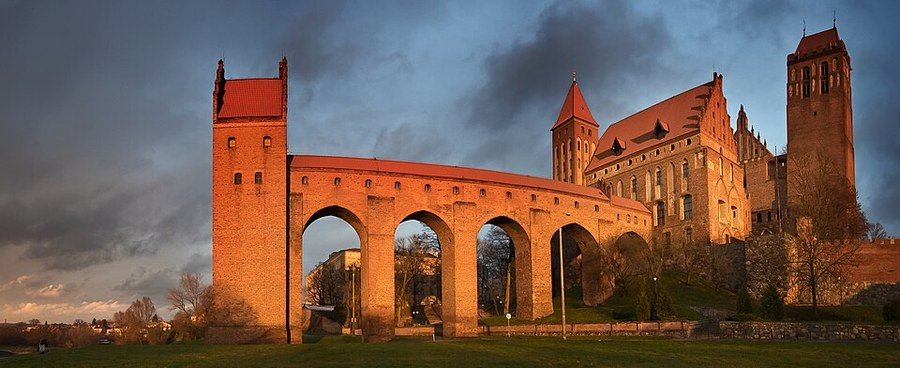

Naujapilis (Marienwerder)¶
In the 1380s [Historical record]¶
The Order’s castle at Kaunas in 1384: Marienwerder, also Naujasis Marienburgas or Lithuanian Naujapilis (“New castle”), built on the Nemunas for the Order’s vassal Vytautas on the site of old Kaunas (whose brick castle the Order had destroyed at Easter 1362); the exact site (right bank or an island) is uncertain. The VLE and Acta Baltico-Slavica 2017 call it the Order’s furthest eastern point. Vytautas reconfirmed the Königsberg treaty here in June or July 1384. In July 1384 he reconciled secretly with Jogaila, took the Order’s castles at Kaunas and Jurbarkas and burned them, capturing their garrisons; the Order’s Marquard von Salzbach, later komtur of Ragnit, is said to have been captured then. It is not Marienwerder (Kwidzyn) in Prussia, seat of the Pomesanian bishop, and not Georgenburg near Insterburg. Sources: VLE (Jurgenburg, Vytautas), en.wikipedia (Lithuanian Civil War).
Naujapilis (Marienwerder)

Naujapilis (Marienwerder) · place — Image: Pawel Wojtyczka, CC BY-SA 3.0 pl via Wikimedia Commons¶

Type |
place |
Note |
Naujapilis: Teutonic castle burned by Vytautas in his 1384 defection. |
Sensory sketch¶
Fresh-hewn oak, lime, river mud, new timber ramps, barges grinding at the quay under loads of bombards, powder and oil. In July the heat is heavy and the air storm-grey; the Nemunas runs broad and low. The garrison drinks Königsberg wine and sings hymns by fires; in the saga’s night the camp is full of the clink of armour, snoring, and the sizzle of oil. When the castle burns it makes a long red column under the river sky, and the dawn smells of tar.
In the saga¶
The “Išdavikų išdavikas” set piece (Book I ch. 22-25): a castle opened from inside by its own lord at a feast, guests become captives, the traitor’s hospitality mirrors Krėva. The Iron Saint’s men burn as Kęstutis did not. Vytautas thinks of the warmth of Perkūnas’s mark “as at Marienwerder” (Book III ch. 21) and Book II ch. 26 recalls the fire. The record gives only the burning: the staging (the sword in the fire, the Kaunas depot) is invention.
Getting there¶
Kaunas is 95 km from Vilnius (100 km by road, two and a half days on horse; 180-200 km on the Neris, four to five days downstream). To Jurbarkas by the Nemunas is about 85 km, two days downstream; Vytautas burned both castles within days of each other (the record gives 9 July for Jurbarkas). To Königsberg by water, 300-320 km, six to nine days downstream; two to four weeks back up. To Salynas, a few hours by boat downstream.
Scenes set here¶
Book I ch. 22 Naujapilis (the Kaunas fortress, spring 1384), ch. 23 Ugnis ir pelenai (the burning), ch. 24 Pasirinkimas, ch. 25 Išdavikų išdavikas, ch. 28 (recalled); Book II ch. 26; Book III ch. 2, ch. 21, ch. 28.
Relations
Events here: Vytautas burns Order castles; turns on the Order
Timeline¶
Year |
Event |
Book |
|---|---|---|
1384-07 |
I · The Wolf’s Exile |
Connections¶
graph LR
ev_burnings_1384["Vytautas burns Order castles; turns on the Order"]
marienwerder["Naujapilis (Marienwerder)"]
ev_burnings_1384 -->|Location| marienwerder
style marienwerder stroke-width:3px